- по технике исполнения:
- рукодельное
- плетеное,
- шитое,
- вязанное.
- машинное
- рукодельное
- по месту производства:
- фламандское кружево,
- алансонское кружево,
- мирекурское кружево,
- белёвское кружево,
- вятское кружево,
- рязанское кружево, и другие.
Кружево — текстильное изделие, не имеющее тканой основы, с орнаментальным оформлением (ажурным узором), образующимся за счёт переплетения, выполненная машинным или ручным способом. Имеет декоративное назначение. Используется в оформлении одежды (воротники, манжеты, женское нижнее бельё); изделие может быть целиком изготовлено из кружева: платье, блуза, шаль, пелерина, шарфик, перчатки, накидка. Кружева широко применяют в оформлении интерьера: в виде декоративных панно, скатертей, занавесок, постельного белья (подушки, покрывала), салфеток и подстаканников. Кружевоплетение является одним из видов декоративно-прикладного искусства и народного художественного промысла (ремесла).
Классификация
Бобинное кружево
Бобинное кружево или коклюшечное кружево, по праву считается историческая область Европы под названием Фландрия. Именно здесь в эпоху Возрождения появился этот вид ремесла и был доведён до совершенства. 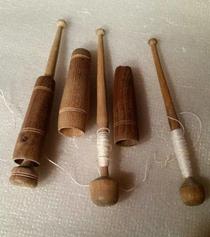 Географические открытия и налаживание торговых связей с далёкими и не очень странами разнообразили моду роскошными тканями и фасонами. Кружевная отделка стоила неимоверно дорого, считалась признаком богатства и высокого социального положения. С её помощью любая одежда выглядела роскошно. Такие детали можно было отпороть и применить в другом туалете. Даже среди королевских особ кружево передавалось по наследству и считалось ценным свадебным подарком даже в XX веке. Производство бобинного кружева появилось в северо-западных регионах России на рубеже XVI — XVII веков. Этому способствовали торговые связи с Европой ещё со времён Ганзейского союза.
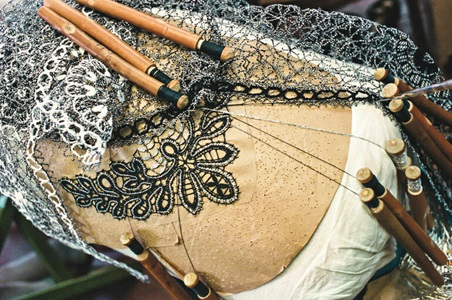 Сохранившиеся образцы старинной женской одежды часто имеют кружевную отделку. Однако, в то время подобное ремесло не носило массового характера. Этот вид рукоделия перестал быть точечным и перешёл в разряд промысла только в XIX веке. Тогда же сформировались известные до сих пор традиционные центры кружевоплетения в следующих городах: Елец, Вятка, Вологда, Мценск. Традиции не утеряны и живут до сих пор. В Вологде работает предприятие «Снежинка», а в 2010 году открылся музей. В нём представлены лучшие образцы старинного и современного бобинного кружева.
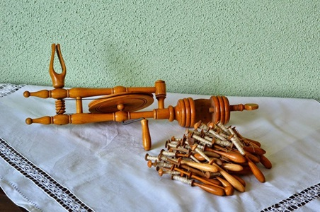 Здесь можно увидеть скатерти и занавески, салфетки, тесьму и всевозможные предметы гардероба, сделанные руками местных мастериц. Неизменной популярностью пользуются экскурсии и уроки плетения кружева на коклюшках для начинающих. Центрами ремесла в те времена были мастерские при помещичьих усадьбах. Их продукция пользовалась огромным спросом в обеих столицах и других крупных городах. Крепостные мастерицы в основном копировали европейские плетёные узоры. После отмены крепостного права рукоделие широко распространилось среди крестьянского сословия и стало народным искусством.
Вязание крючком
Вязание крючком — один из видов рукоделия, в процессе которого при помощи вязального крючка и ниток создаются вязаные изделия. 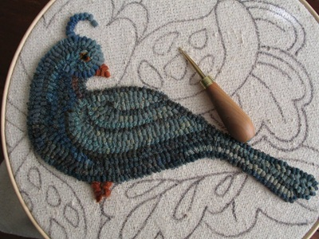 Самое раннее письменное упоминание этого вида рукоделия зафиксировано под названием «пастушье вязанье» в The Memoirs of a Highland Lady by Elizabeth Grant in the 19th century. Впервые узоры для вязания крючком были опубликованы в голландском журнале Pénélopé в 1824 году. Доказательством того, что вязание крючком было новинкой в XIX веке, считают публикацию 1847 года A Winter's Gift, в которой содержатся подробные инструкции по исполнению приёмов вязания крючком, в то же время, когда основы других видов рукоделия для читателей не разъясняются.Эта техника вязания получила широкое распространение в Европе в середине XIX века. С тех пор было разработано множество уникальных узоров и техник, которые передавались из поколения в поколение мастерицами разных стран.
Вязание крючком отличается быстротой и возможностью создавать не только плотные, рельефные узоры, но и тонкие, ажурные, напоминающие кружевное полотно. Вязание крючком применяют как для изготовления одежды целиком 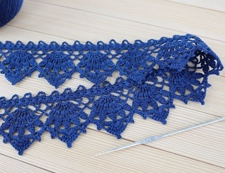 (например, свитер, шарф, платье, шаль, варежки и т. д.), так и отделочных элементов одежды (рукава, пуговицы, манжеты, воротник и т. д.) или украшений (салфетки, занавески, скатерть и т. д.). В России вязание крючком получило распространение с конца XIX века. Мастерицы вязали преимущественно кружева, заимствуя для них узоры из народной вышивки крестом и ткачества.Благодаря своей универсальности, вязание крючком стало популярным видом рукоделия во многих странах мира. Особую ценность представляют винтажные схемы вязания, которые сохраняют традиционные мотивы и орнаменты прошлых веков.
Изначально вязальные крючки не были крючками в прямом смысле слова — это были ровные палочки. Сейчас используются крючки из различных материалов: металлические, костяные, пластмассовые, деревянные, и разной толщины (от 0,5 до 15 мм). 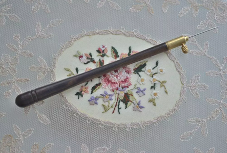 Крючки диаметром 3—15 мм употребляют для вязания изделий из толстой шерстяной или синтетической пряжи, полиэфирного шнура. Для ириса, мулине, гаруса берут более тонкий крючок (1,5—2,5 мм в диаметре). Если для тонких ниток взять толстый крючок, вязаное полотно будет ажурное, с большими просветами. Если же взять толстые нитки и тонкий крючок, то получится плотное вязание.Современные производители предлагают эргономичные крючки с удобными ручками, что делает процесс вязания более комфортным. Для выполнения сложных узоров используют также специальные крючки: тунисские, двусторонние, с расширенной головкой.
Макраме
Макраме (от арабского مقرمة (миграма) — «тесьма, кружево») — техника узелкового плетения, с помощью которой художник из разнообразных мягких материалов делает прочные и жесткие конструкции. Кроме того, макраме является разновидностью декоративно-прикладного искусства, широко применяемой для изготовления предметов быта, а также украшения элементов гардероба и интерьера. Макраме — это также общепринятое название всевозможных готовых изделий, созданных на основе техники узелкового плетения из веревок, лески, тесьмы или нитей. Размеры этих предметов могут варьироваться в диапазоне от нескольких сантиметров до десяти и более метров. Основной сферой применения узелкового плетения по праву считается декоративно-прикладное искусство. Чаще всего макраме используется для изготовления: гамаков и абажуров для светильников; браслетов и ожерелий; скатертей и занавесок; салфеток и подвесных кашпо; сумочек и поясов; шарфов и шалей; покрывал и настенных ковров; знаков отличия и украшения униформы (аксельбантов); головных уборов и элементов одежды; рукояток для ножей и лошадиной упряжи.
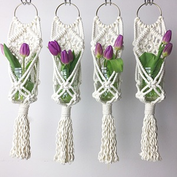
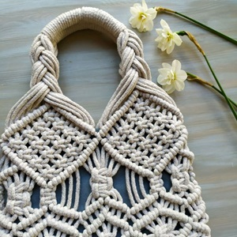
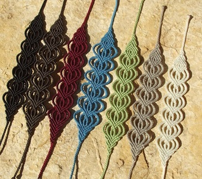
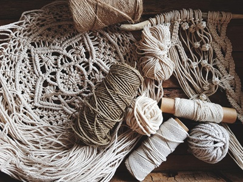
В макраме используется 6 основных видов плетения и более сотни разнообразных узлов. Чаще всего основой для изготовления предметов быта и декора служат шнуры из хлопка, льна, конопли или синтетических материалов. Помимо этого, для плетения также подходят тонкие полоски кожи, бумажный шпагат и пряжа. В мировой культуре есть немало случаев оригинального применения этой техники. Например, американские индейцы задолго до прибытия первых европейцев изобрели «кипу» — узелковое письмо, которое они использовали для передачи информации, ведения подсчетов и в качестве календаря.
В Европу макраме проникло через крестовые походы и мавританское завоевание Пиренейского полуострова. Сначала техника стала популярной в Испании и Италии, затем распространилась по всей Европе. Значительную роль в распространении сыграли моряки, которые во время длительных плаваний создавали изделия из веревок и шпагата, а затем продавали их в портах. Пик популярности пришёлся на XIX век в Англии перед промышленной революцией, когда макраме стало модным увлечением небогатых слоёв населения. Женщины изготавливали предметы быта для дома, но мода быстро прошла после появления доступных фабричных тканей. Последний всплеск интереса наблюдался в 1970-х годах. Сегодня макраме не имеет массового спроса, но сохраняется благодаря энтузиастам как интересная техника прикладного искусства.
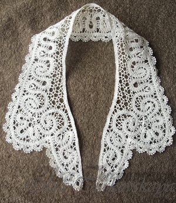
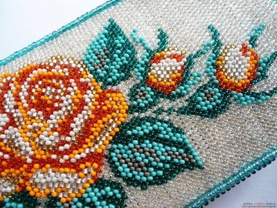
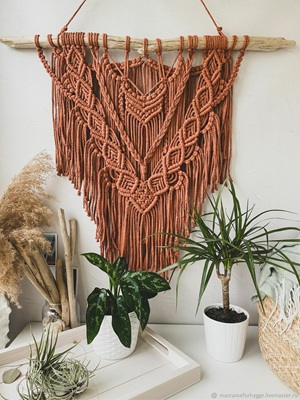
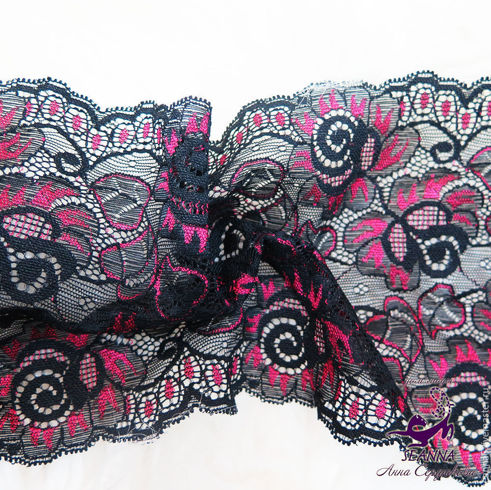